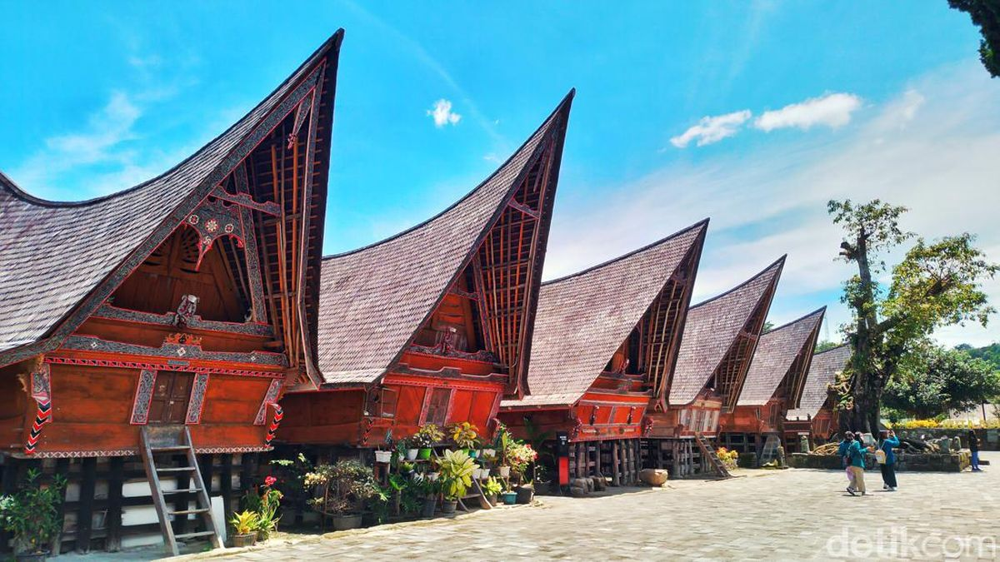

Ruma Bolon (disebut juga sebagai Jabu Bolon) adalah bentuk rumah tradisional masyarakat Batak Toba yang berasal dari daerah Sumatera Utara.
|
 |
Rumah Bolon adalah rumah adat dari suku Batak di Sumatera Utara. Rumah ini merupakan simbol status sosial dan kekuatan tradisional, biasanya digunakan oleh kepala suku atau raja. Rumah Bolon memiliki arsitektur yang khas dengan atap yang tinggi dan berbentuk segitiga. Atapnya yang runcing dirancang untuk melindungi dari hujan deras dan panas matahari, serta melambangkan gunung sebagai simbol kekuatan.
Rumah Bolon memilik bentuk persegi empat. Ruma Bolon mempunyai model seperti rumah panggung. Rumah ini memiliki tinggi dari tanah sekitar 1,75 meter dari tanah. Tingginya Ruma Bolon menyebabkan penghuni rumah atau tamu yang hendak masuk ke dalam rumah harus menggunakan tangga. Tangga Ruma Bolon terletak di tengah-tengah badan rumah. Hal ini mengakibatkan jika tamu atau penghuni rumah harus menunduk untuk berjalan ke tangga.
Bagian dalam Rumah Bolon adalah sebuah ruang kosong yang besar dan terbuka tanpa kamar. Rumah berbentuk persegi empat ini ditopang oleh tiang-tiang penyangga. Tiang-tiang ini menopang tiap sudut rumah termasuk juga lantai dari Ruma Bolon. Ruma Bolon memiliki atap yang melengkung pada bagian depan dan belakang.Rumah Bolon memilik atap yang berbentuk seperti pelana kuda.
Sejarah rumah ini berkaitan erat dengan masyarakat Batak yang dikenal sebagai penjaga tradisi dan adat. Rumah Bolon sering digunakan dalam upacara adat dan perayaan penting, seperti pernikahan dan ritual keagamaan. Desainnya yang megah dan ornamen ukiran yang rumit menggambarkan nilai-nilai budaya dan spiritual suku Batak.
Lantai Ruma Bolon terbuat dari papan dan atap Ruma Bolon terbuat dari ijuk atau daun rumbia. Bagian dalam Ruma Bolon adalah ruangan besar yang tidak terbagi-bagi atas kamar. Namun, tidak berarti bahwa tidak ada pembagian ruang di dalam Ruma Bolon. Ruangan terbagi atas tiga bagian yaitu jabu bona atau ruangan belakang di sudut sebelah kanan, ruangan jabu soding yang berada di sudut sebelah kiri yang berhadapan dengan jabu bona, ruangan jabu suhat yang berada di sudut kiri depan, ruangan tampar piring yang berada di sebelah jabu suhat, dan ruangan Jabu Tongatonga ni Jabu Bona. Ruangan jabu bona dikhususkan bagi kepala keluarga rumah. Ruangan jabu soding dikhususkan bagi anak perempuan pemilik ruma, tempat para istri tamu yang datang dan tempat diadakannya upacara adat. Ruangan jabu suhat dikhususkan bagi anak lelaki tertua yang telah menikah.
Ruangan tampar piring adalah ruangan bagi tamu. ruangan Jabu Tongatonga ni Jabu Bona dikhususkan bagi keluarga besar. Sebagian besar dari Ruma Bolon terbuat dari kayu. Ruma Bolon tidak menggunakan paku. Ruma Bolon hanya menggunakan tali untuk menyatukan bahan-bahan rumah. Tali ini diikatkan kepada kayu dengan kuat agar rangka rumah tidak longgar ataupun rubuh suatu saat. Pada badan Ruma Bolon terdapat berbagai ukiran maupun gambar yang memiliki makna sesuai dengan kehidupan masyarakat Batak.